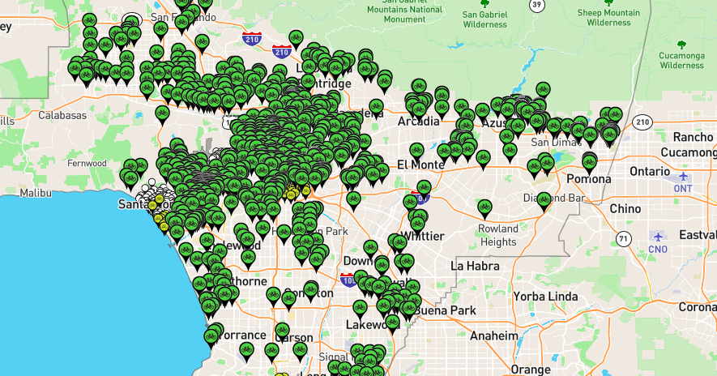
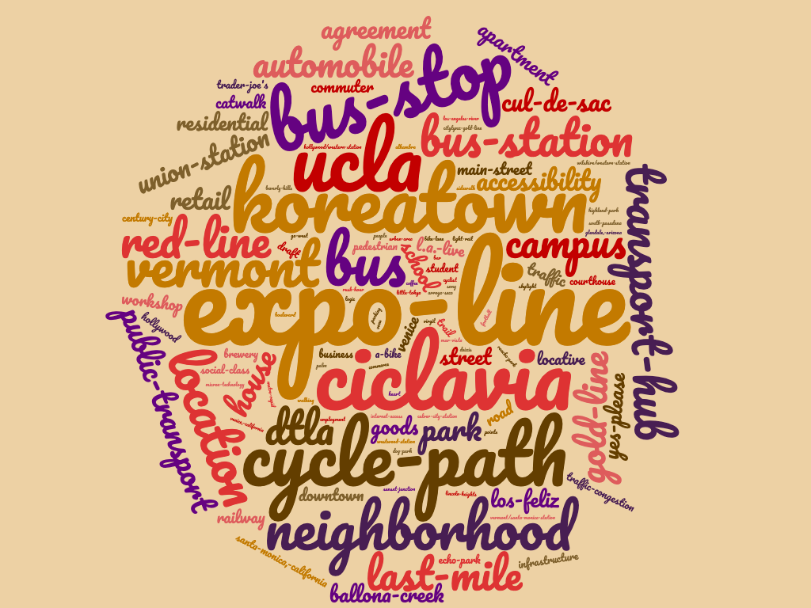
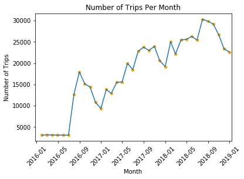
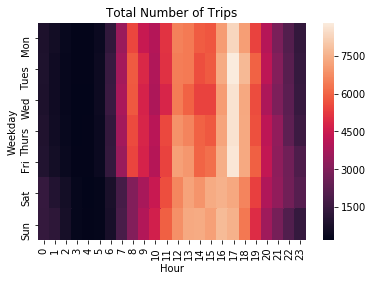
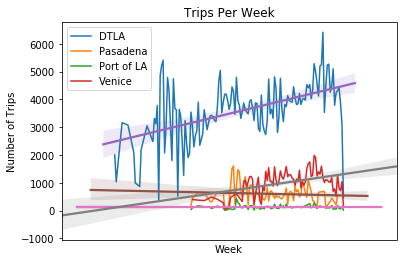
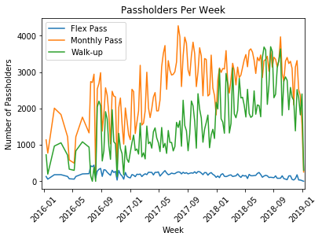

Data Exploration & Visualization
Below are some graphs and plots from our analysis of the provided and externally obtained data.
Comment Data
Metro Bike Share provides a website for users to suggest stations and leave comments on suggested stations. The map of suggested stations can be found here and a screenshot of the suggestion page is included below.
 Suggested Stations from comment data.  A word cloud of the comment data.Provided Data
 An overview of the trips per month for all regions shows increase in usage throughout time and also seasonality. Winter time is the least popular time for users to use the bike share.  The most popular time to use the bike share are weekdays around from noon to 6 pm.  A quick look at the overall trend of each region seems to indicate that DTLA and Venice are growing but Port of LA seems to be consistent in usage and Pasadena closed down.  Comparison of Flex Pass with Monthly and Walk-up Passes.Distribution of Bikes at Stations
By creating a markov chain representing stations as the states each a bike can be in, we can find the steady state probability a bike is any given station. By multiplying this probability by 1240 (approximately what we have computed for the number of active bikes at any given time) we get the expected number of bikes in each station. Each station has its own number of docks, but generally anything over 25 is cause for concern as there will likely be more bikes than docks. This is useful information in determining the staging of bicycles i.e. moving them from high probability stations to low probability stations. The following table contains information about the extremums of the expected cumber of bikes for the stations:
| Station ID | Percentage of Total Bikes | Expected Number of Bikes |
|---|---|---|
| 4215 | 0.03034476 | 37.63 |
| 4214 | 0.02443431 | 30.3 |
| 4210 | 0.02258008 | 28 |
| 3005 | 0.0206907 | 25.66 |
| 4207 | 0.0087878 | 10.9 |
| 4125 | 0.00163297 | 2.02 |
| 4127 | 0.00221579 | 2.75 |
| 4135 | 0.00343244 | 4.5 |
A full detailed report of our findings and prediction models can be found here.